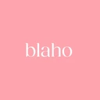
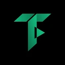
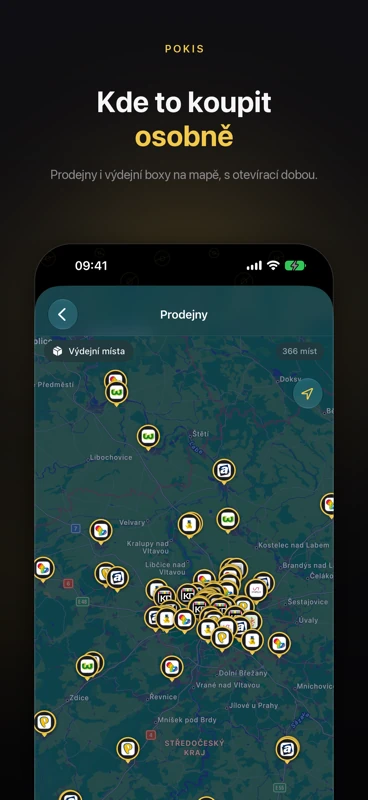
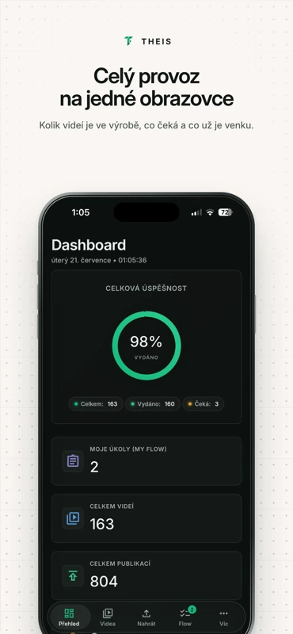
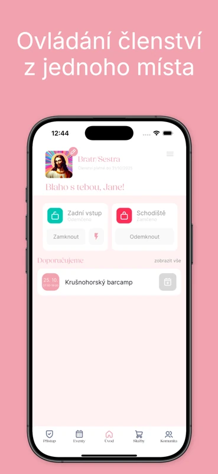

Kdo jsme
Jeden tým.
Jeden tým.
Celá cesta.
Od nápadu k provozu. Nepředáváme vás mezi agenturami — navrhneme, postavíme, nasadíme a pak se o to staráme.
- Návrh, vývoj, nasazení i provoz v jednom týmu
- Software i hardware — od API po chytré zámky
- Vlastní produkty, které sami provozujeme
- Zůstáváme i po spuštění
3
vlastní produkty v provozu
theis.cz · pokis.cz · qeris.cz
7
oblastí pod jednou střechou
Od vývoje po marketing
24h
do kdy se ozveme
Na každou poptávku
2
města, kde nás najdete
Praha & Karlovy Vary
Důvěřují nám


Mobilní aplikace
Umíme i
 POKIS
POKIS
Umíme i
mobilní appky.
Stejný tým, který staví web a backend, dotáhne i aplikaci do telefonu — od návrhu přes vývoj až po schválení v App Storu.
iOS i AndroidPush notifikaceMapy a polohaNahrávání videaChytré zámkyPublikace do App Storu

Blaho & work
THEISVšechny tři jsou ke stažení v App Storu.



Reference
Klienti, kteří nám důvěřují.
Český olympijský výbor
IT podpora, onboarding, podatelna, sociální sítě
We Are Creative Agency
3D konfigurátor obalů
Fleysen
Migrace na Shopify a marketingová komunikace
Blaho & work
Chytré zámky, IoT a mobilní aplikace
Glowly
Migrace ze Shoptetu na Shopify
Honza Bartoš
Nastavení a měření